| Fourier Transformation: | 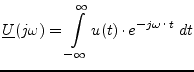 | (15.178) | |
| inverse Fourier Transformation: | 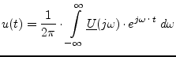 | (15.179) |
Any signal can completely be described in time or in frequency domain.
As both representations are equivalent, it is possible to transform them
into each other. This is done by the so-called Fourier Transformation and
the inverse Fourier Transformation, respectively:
| Fourier Transformation: | 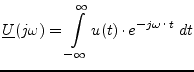 | (15.178) | |
| inverse Fourier Transformation: | 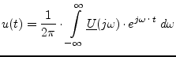 | (15.179) |
| 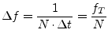 | (15.182) |
With DFT the  time samples are transformed into
time samples are transformed into  frequency samples.
This also holds if the time data are real numbers, as is always
the case in "real life": The complex frequency samples are conjugate
complex symmetrical and so equalizing the score:
frequency samples.
This also holds if the time data are real numbers, as is always
the case in "real life": The complex frequency samples are conjugate
complex symmetrical and so equalizing the score:
| 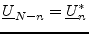 | (15.183) |
That is, knowing the input data has no imaginary part, only half of the Fourier data must be computed.
As can be seen in equation 15.180 the computing time of the
DFT rises with  . This is really huge, so it is
very important to reduce the time consumption. Using a strongly
optimized algorithm, the so-called Fast Fourier Transformation (FFT),
the DFT is reduced to an
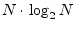 time rise.
The following information stems from [61],
where the theoretical background is explained comprehensively.
. This is really huge, so it is
very important to reduce the time consumption. Using a strongly
optimized algorithm, the so-called Fast Fourier Transformation (FFT),
the DFT is reduced to an
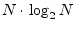 time rise.
The following information stems from [61],
where the theoretical background is explained comprehensively.
The fundamental trick of the FFT is to cut the DFT into two parts, one with data having even indices and the other with odd indices:
| 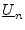 | 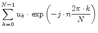 | (15.184) | |
| 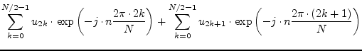 | (15.185) | ||
| 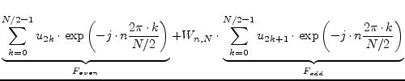 | (15.186) | ||
| with | 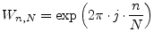 (so-called 'twiddle factor') | (15.187) |
The new formula shows no speed advantages. The important thing is that
the even as well as the odd part each is again a Fourier series. Thus
the same procedure can be repeated again and again until the equation
consists of  terms. Then, each term contains only one data
with factor 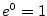. This works if the number of data is a power of
two (2, 4, 8, 16, 32, ...).
So finally, the FFT method performs 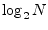 times the operation
terms. Then, each term contains only one data
with factor 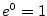. This works if the number of data is a power of
two (2, 4, 8, 16, 32, ...).
So finally, the FFT method performs 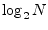 times the operation
to get one data of
 . This is called the
Danielson-Lanzcos algorithm.
The question now arises which data values of
needs to be combined according to equation (15.188).
The answer is quite easy. The data array must be reordered by the
bit-reversal method. This means the value at index
. This is called the
Danielson-Lanzcos algorithm.
The question now arises which data values of
needs to be combined according to equation (15.188).
The answer is quite easy. The data array must be reordered by the
bit-reversal method. This means the value at index  is swapped
with the value at index 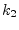 where is obtained by mirroring
the binary number
is swapped
with the value at index 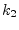 where is obtained by mirroring
the binary number  , i.e. the most significant bit becomes the
least significant one and so on. Example for 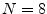:
, i.e. the most significant bit becomes the
least significant one and so on. Example for 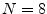:
| 000 | 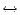 | 000 | 011 | 110 | 110 | 011 | ||||
| 001 | 100 | 100 | 001 | 111 | 111 | |||||
| 010 | 010 | 101 | 101 |
Having this new indexing, the values to combine according to equation 15.188 are the adjacent values. So, performing the Danielson-Lanzcos algorithm has now become very easy.
Figure 15.4 illustrates the whole FFT algorithm starting with the
input data and ending with one value of the output data
 .
.
This scheme alone gives no advantage. But it can compute all output
values within, i.e. no temporary memory is needed and the periodicity
of 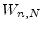 is best exploited. To understand this, let's have a look
on the first Danielson-Lanczos step in figure 15.4. The four
multiplications and additions have to be performed for each output
value (here 8 times!). But indeed this is not true, because 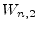
is 2-periodical in  and furthermore
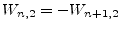. So now,
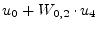 replaces the old 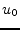 value and
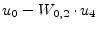 replaces the old 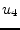 value. Doing this for
all values, four multiplications and eight additions were performed
in order to calculate the first Danielson-Lanczos step for all (!!!)
output values. This goes on, as 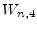 is 4-periodical in
and furthermore
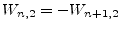. So now,
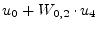 replaces the old 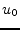 value and
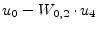 replaces the old 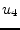 value. Doing this for
all values, four multiplications and eight additions were performed
in order to calculate the first Danielson-Lanczos step for all (!!!)
output values. This goes on, as 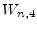 is 4-periodical in  and
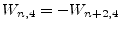. So this time, two loop iterations (for
and for 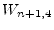) are necessary to compute the current
Danielson-Lanczos step for all output values. This concept continues
until the last step.
and
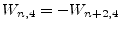. So this time, two loop iterations (for
and for 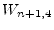) are necessary to compute the current
Danielson-Lanczos step for all output values. This concept continues
until the last step.
Finally, a complete FFT source code in C should be presented. The original version was taken from [61]. It is a radix-2 algorithm, known as the Cooley-Tukey Algorithm. Here, several changes were made that gain about 10% speed improvement.
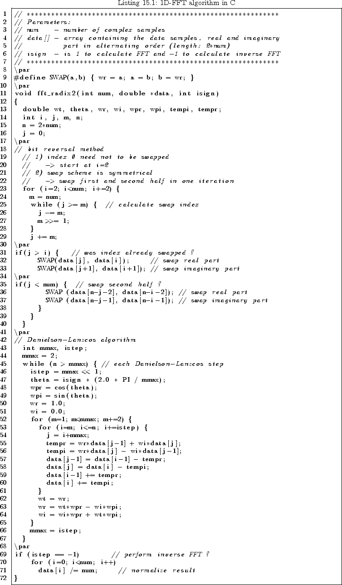
There are many other FFT algorithms mainly aiming at higher speed (radix-8 FFT, split-radix FFT, Winograd FFT). These algorithms are much more complex, but on modern processors with numerical co-processors they gain no or hardly no speed advantage, because the reduced FLOPS are equalled by the far more complex indexing.
All physical systems are real-valued in time domain. As already mentioned above, this fact leads to a symmetry in frequency domain, which can be exploited to save 50% memory usage and about 30% computation time. Rewriting the C listing from above to a real-valued FFT routine creates the following function. As this scheme is not symmetric anymore, an extra procedure for the inverse transformation is needed. It is also depicted below.
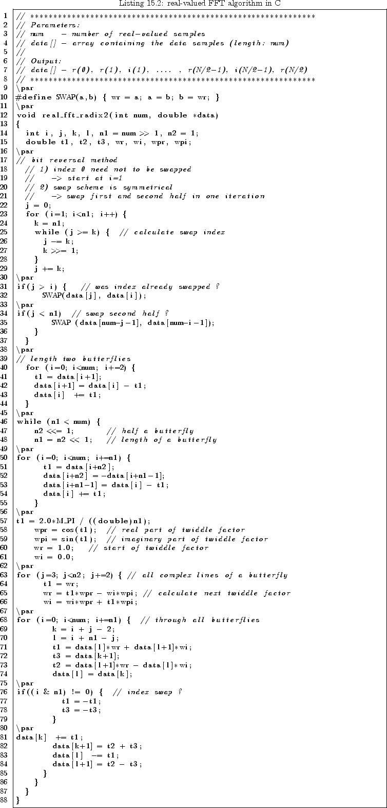
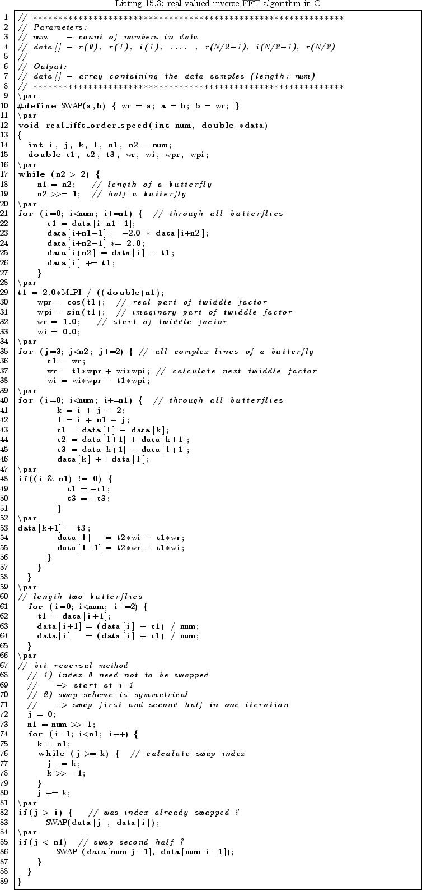
A standard Fourier Transformation is not useful in harmonic balance methods, because with multi-tone excitation many mixing products appear. The best way to cope with this problem is to use multi-dimensional FFT.
Fourier Transformations in more than one dimension soon become very time consuming. Using FFT mechanisms is therefore mandatory. A more-dimensional Fourier Transformation consists of many one-dimensional Fourier Transformations (1D-FFT). First, 1D-FFTs are performed for the data of the first dimension at every index of the second dimension. The results are used as input data for the second dimension that is performed the same way with respect to the third dimension. This procedure is continued until all dimensions are calculated. The following equations shows this for two dimensions.
| 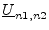 | 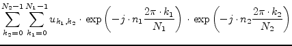 | (15.189) | |
| 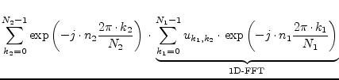 | (15.190) |
Finally, a complete  -dimensional FFT source code should be
presented. It was taken from [61] and somewhat speed
improved.
-dimensional FFT source code should be
presented. It was taken from [61] and somewhat speed
improved.
Parameters:
| ndim | - | number of dimensions |
| num[] | - | array containing the number of complex samples for every dimension |
| data[] | - | array containing the data samples, |
| real and imaginary part in alternating order (length: 2*sum of num[]), | ||
| going through the array, the first dimension changes least rapidly ! | ||
| all subscripts range from 1 to maximum value ! | ||
| isign | - | is 1 to calculate FFT and -1 to calculate inverse FFT |
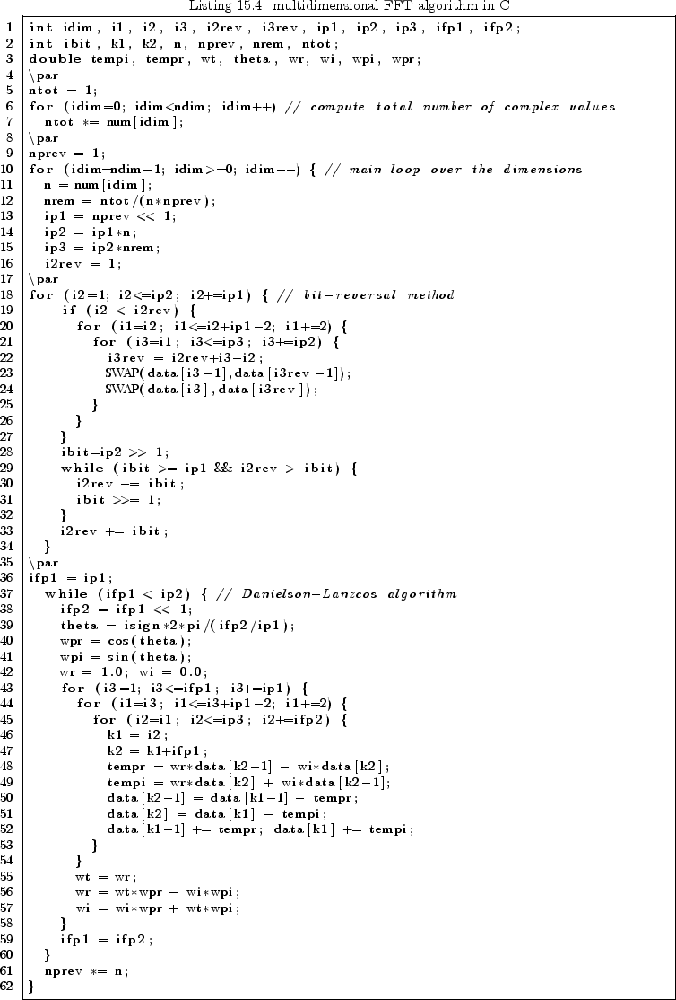